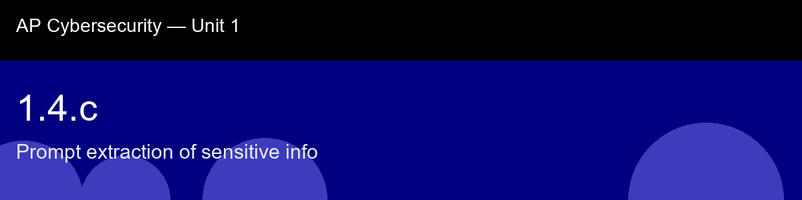

1.4.c recap, Prompt extraction of sensitive info
Nice work today. Here's what to lock in:
- Recap handout:
post-lecture-handout.docx
- Simulation: SimLab
- Self-check quiz: due before next class
The big picture: It's worth noticing the shape of the arms race this skill sets up: regex output filters catch what you anticipated, and a motivated adversary evades exactly that by encoding, splitting, or paraphrasing the secret. This is the same static-analysis-versus-creative-adversary tension you'll meet again in 1.5.b (code scanning) and 5.1.a (SQL injection detection), pattern matching is cheap, fast, and a genuinely useful first layer, but it is never, on its own, a complete defense against an adversary who knows the patterns you're matching against.
Key terms to lock in:
- Prompt extraction, eliciting an LLM's confidential context (system prompt, credentials) through adversarial queries that cause the model to quote or summarize what it was told to keep private
- System prompt, operator-supplied instructions placed before user input in the context window; sets the model's persona, rules, and capabilities; often intended to be confidential
- Output filter, a post-processing layer that inspects LLM output for policy violations (credential patterns, forbidden content) before the response is delivered to the end user
- API key, a secret credential that grants programmatic access to a service; its presence in LLM output is always a leak and often exploitable in minutes
- Data class, a category of sensitive information (credential, personal data, internal configuration) treated uniformly by a detection or redaction policy
Common misconceptions -- don't fall for these:
- "The system prompt is hidden from the model.", The model reads and reasons over the full context window; "confidential" is a policy instruction the model tries to follow, not a technical barrier that prevents access. The model can be asked to repeat what it knows, and may comply.
- "Regex can catch all leaks.", Regex catches structured patterns you anticipated. A creative adversary can evade simple patterns through encoding, paraphrasing, or splitting the sensitive token. Regex is a useful layer, not a complete defense.
Learning objective(s): 1.4.A

## 1.4.c recap, Prompt extraction of sensitive info
Nice work today. Here's what to lock in:
- Recap handout: `post-lecture-handout.docx`
- Simulation: SimLab
- Self-check quiz: due before next class
**The big picture:** It's worth noticing the shape of the arms race this skill sets up: regex output filters catch what you anticipated, and a motivated adversary evades exactly that by encoding, splitting, or paraphrasing the secret. This is the same static-analysis-versus-creative-adversary tension you'll meet again in 1.5.b (code scanning) and 5.1.a (SQL injection detection), pattern matching is cheap, fast, and a genuinely useful first layer, but it is never, on its own, a complete defense against an adversary who knows the patterns you're matching against.
**Key terms to lock in:**
- **Prompt extraction**, eliciting an LLM's confidential context (system prompt, credentials) through adversarial queries that cause the model to quote or summarize what it was told to keep private
- **System prompt**, operator-supplied instructions placed before user input in the context window; sets the model's persona, rules, and capabilities; often intended to be confidential
- **Output filter**, a post-processing layer that inspects LLM output for policy violations (credential patterns, forbidden content) before the response is delivered to the end user
- **API key**, a secret credential that grants programmatic access to a service; its presence in LLM output is always a leak and often exploitable in minutes
- **Data class**, a category of sensitive information (credential, personal data, internal configuration) treated uniformly by a detection or redaction policy
**Common misconceptions -- don't fall for these:**
- "The system prompt is hidden from the model.", The model reads and reasons over the full context window; "confidential" is a policy instruction the model tries to follow, not a technical barrier that prevents access. The model can be asked to repeat what it knows, and may comply.
- "Regex can catch all leaks.", Regex catches structured patterns you anticipated. A creative adversary can evade simple patterns through encoding, paraphrasing, or splitting the sensitive token. Regex is a useful layer, not a complete defense.
**Learning objective(s):** 1.4.A